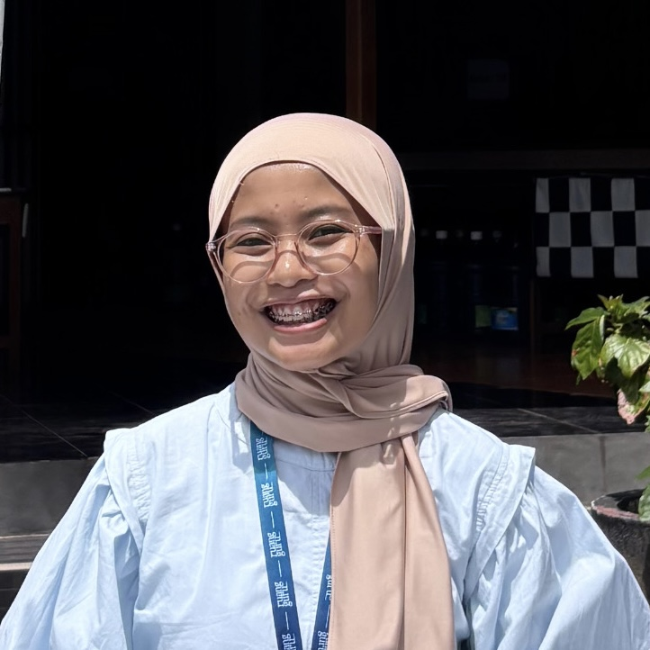

Ubah kata-kata biasa menjadi aplikasi nyata dalam sekejap mata.
Tukang Bikin Aplikasi & "Vibe Coder" di Ruangguru.

Cara ngobrol dengan AI supaya hasilnya tepat sesuai yang ada di kepala kita.
Mengenal peralatan dan langkah kerja terbaru para pembuat aplikasi.
Bedah ide produk apa saja yang bisa dibuat dalam hitungan jam.
Praktik langsung membuat aplikasi nyata dari nol di depan mata.
Bikin aplikasi bukan lagi hak eksklusif programmer berbulan-bulan.
From Typist to Director
Pahami cara mengendalikan AI, supaya imajinasimu bisa jadi wujud nyata.
Ketika kamu menulis prompt, kamu sedang memberikan instruksi yang akan otomatis diubah menjadi aplikasi nyata oleh AI. Kunci utamanya adalah "Jelas".
Jelaskan sedetail mungkin. Jangan lupakan konteks bisnis. Anggap AI itu adalah "Anak Magang yang sangat pintar" tapi belum tahu apa-apa soal tujuan proyekmu.
Bagi perintahmu menjadi 4 pilar ini agar AI tidak kebingungan.
Siapa AI-nya? "Bertindaklah sebagai desainer web senior yang ahli membuat web keren."
Apa latar belakangnya? "Saya sedang membuat aplikasi kasir untuk kedai kopi kecil."
Apa yang harus dikerjakan? "Buatkan tampilan halaman menu kopi yang menarik dengan foto."
Bagaimana format hasilnya? "Gunakan warna dominan cokelat dan pastikan rapi di tampilan HP."
"Bikin fitur login yang keren."
"Bertindaklah sebagai pembuat aplikasi ahli. Buatkan halaman Login yang tampilannya minimalis, memiliki kotak email & sandi. Beri warna tombol Login menjadi biru menyala, dan pastikan memunculkan kalimat merah ('Sandi salah') jika sandi kurang dari 8 karakter."
Lebih baik tunjukkan, jangan cuma menyuruh.
"Buatkan saya desain tombol."
"Buatkan saya desain desain tombol kedua. Samakan gaya desain dan warnanya dengan gambar tombol utama yang saya lampirkan bersaman ini."
Vibe coding itu seperti ngobrol bolak-balik bersama partner kreatif, bukan pesulap sekali jadi.
Minta AI buatkan fondasi awal atau halaman utamanya terlebih dulu.
Tegur AI jika warnanya salah atau tombolnya tidak jalan. "Tolong geser logonya ke kanan."
Tambahkan detail seperti animasi pelan saat kartu ditekan agar terlihat premium.
Senjata modern dan resep rahasia untuk melahirkan produk dengan super cepat.
Beda asisten AI, beda pula kekuatannya. Kenali senjatamu!
Jika ada satu sistem AI yang paling ajaib untuk memulai, kenalkan "Antigravity". Ia bukan sekadar alat bantu ketik, ia asisten pintar mandiri.
Kita tidak lagi repot memikirkan kode dan bahasa pemrograman bahasa alien.
Tulis apa yang kamu ingin buat dalam bahasa rapi layaknya membuat "Surat Penawaran" proyek... serahkan ke Antigravity, dan AI akan merakit semuanya.
Kesalahan umum bagi yang baru mencoba AI adalah memberikan satu kalimat sakti.
"Buatkan saya aplikasi sekeren Netflix."
Hasil: AI akan kebingungan, memberikan struktur setengah jadi, dan penuh eror.
AI akan berbohong dengan sangat percaya diri kalau ia tidak tahu jawabannya.
Lalu, produk sungguhan apa saja yang sudah berhasil diciptakan berkat "AI Assistants"?
Peningkatan kecepatan pengerjaan saat kamu bekerja cerdas dengan robot Asisten (AI).
Buat aplikasi untuk otomatisasi tugas membosankanmu setiap hari.
Pembuatan papan visual (layaknya Trello) untuk melacak progress kerjamu. Kamu bisa meminta gambar desain awal pakai AI generatif layar, lalu serahkan gambarnya ke Antigravity untuk dibuat aplikasinya utuh dan disambungkan ke database penyimpanan lokal.
Rilis aplikasi sederhana yang menyelesaikan satu masalah spesifik di pasaran.
Pengguna cukup mengisi form biodata, dan website langsung mengubahnya menjadi halaman keren. Kamu bisa minta Antigravity untuk mendesain animasi indah atau gaya pewarnaan unik.
Alih-alih stres memikirkan rumus tata letak, waktumu bisa dipakai memikirkan "Siapa yang mau beli produk ini?".
Gunakan AI untuk memeriksa ribuan kata dalam hitungan detik secara massal.
Bawa AI melayang di halaman browser favoritmu.
Sebuah tombol mungil di browser. Tiap buka profil LinkedIn orang, kamu tekan tombol itu, dan AI akan merangkum profil panjang menjadi 3 peluru penawaran kerja. Antigravity bisa membuat sistem ekstensi browser ini dengan satu perintah runut.
Buat alat yang fokus membantu pelatihan secara spesifik.
Mintalah desain kartu yang bisa dibalik (animasi halus pakai AI). Setiap membalik kartu, AI lain meramu pertanyaan baru agar pengguna tidak mudah hafal polanya. Dapat jadi prototipe fungsional kurang dari seminggu.
Tampilkan dan pahami data rumit hanya dengan cara menceritakannya ke AI.
Unggah sebuah file Excel (CSV) tebal. Ketik: "Tolong tampilkan grafik pemasukan mingguan, cari lokasi cabang mana yang belinya sepi." AI langsung memasak rangkuman dan membangun bagannya—menghemat pekerjaan admin berhari-hari.
Tonton sendiri bagaimana kita membangun aplikasi buku catatan pintar dari nol koma nol.
Sebelum meminta, kita gambar dulu angan-angan fiturnya.
Perintahkan Antigravity membuat folder utamanya dan memasang seragam tampilannya secara otomatis di komputermu.
Minta gambarkan Menu atas, Navigasi kiri, dan Kolom Utama bernuansa putih bersih.
Sekarang beritahu AI cara agar tulisan ini bisa masuk dan tampil urut bila belum di-refresh halamannya.
Revisi animasi tombol saat kesentuh panah mouse, tambah jarak kanan-kiri yang masih sempit.
Produk secanggih apa pun kalau tak bisa diakses orang umum percuma saja.
Platform ajaib di mana kita melempar kode berantakan kita, lalu mereka memajangnya live di internet dunia tanpa kerumitan server tebal.
Tempat yang bertugas menjaga catatan pengguna ini tidak hilang ketika web tertutup rapat.
Mari kita berpindah ke layar Antigravity.
Jangan takut robot cerdas AI akan merebut pekerjaan manusia. AI akan merebut pekerjaan manusia yang menolak memakai AI. Jadilah "Vibe Coder" mulai hari ini.
@maretacodes